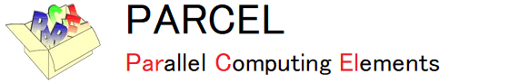

PARCEL SYCL v1.2 マニュアル
2 つの文書からなる. 各ページ上部のリンクで日本語版と英語版を切り替えられる.
| 文書 | 内容 |
|---|---|
| 利用者ガイド | ライブラリを使う人向け. クイックスタート, 基本構成, SYCL 対応コンパイラとインストール (spack, macOS の Homebrew を含む), C++・C言語・Fortran・Python からの使用方法, アルゴリズム (線形ソルバ・固有値ソルバ・前処理・QR 分解), ソルバの選び方, 性能, 版と互換性. |
| API リファレンス | 公開クラスと関数の仕様. 言語によらない共通事項 (ソルバ, 入力の行列, 設定の意味と既定値, 定数, 結果, 収束状態, ソルバごとの収束判定) と, C++ (データ型, comm, matrix, vector, 各ソルバのメンバ関数), C言語, Fortran, Python の API を, 関数ごとに同じ書式で示す. 共通事項と使う言語の章だけで読める. 言語はページの上のタブで切り替える. 関数索引付き. |
| 検索 | 文書 (利用者ガイド・API リファレンス) 全体のキーワード検索. |
ダウンロード
最新版 (v1.2, 公開日 2026-10-23) は PARCEL-release に置く.
過去のバージョン: SYCL 版の v1.0 は PARCEL-release, SYCL 版より前の PARCEL 1.0〜1.2 (Fortran, CUDA) は PARCEL-legacy に置く.
ライセンス
オープンソースとし, GNU Lesser General Public License (LGPL-3.0) とする.
プログラム開発の目的及び概要
現在の計算環境では, CPU に加え, GPU, FPGA, AI アクセラレータなど, さまざまな種類のハードウェアが活用されている. これらのデバイスはそれぞれ異なるプログラミングモデル (CUDA, OpenCL など) を必要とするため, 個別に開発を行う必要があり, プログラムの移植性や保守性に課題がある. この課題を解決するため, Khronos Group によって策定されたオープンな標準規格 SYCL が登場した. SYCL は C++ をベースとしており, CPU や GPU をはじめとする異種計算プラットフォーム上での並列プログラミングを単一ソースで実現できる.
PARallel Computing ELements (PARCEL) ライブラリは, 演算性能に優れる一方でノード間通信性能が相対的に低い並列計算機に適した並列 Krylov 部分空間法ソルバを提供するライブラリである. これまで PARCEL は CPU 向けと NVIDIA GPU 向けのバージョンがそれぞれ独立に開発されてきたが, これを SYCL によって再実装することで, 性能可搬性とプログラムの保守性を高めることが可能となった. v1.2 では Intel / Arm CPU (A64FX, Apple M4 を含む) および NVIDIA / AMD GPU の計算環境で動作を確認しており, 将来的にはさらに Intel GPU, FPGA などへの対応も行っていく予定である.
さらに, ハードウェアごとに演算性能や特性が異なるため, 半精度, 単精度, 倍精度, 4 倍精度相当 (double-double) といった適切な精度の選択が重要である. SYCL 版 PARCEL は計算アルゴリズムやデータ型に応じて異なる精度を柔軟に組み合わせて使用できる混合精度処理をサポートしており, これにより演算精度を維持しつつメモリアクセスのコストを抑えた, 高速かつ数値的に安定なソルバを実現している.
v1.2 の変更点
- 固有値ソルバを追加: べき乗法 (
power), 逆べき乗法 (inverse_power), Krylov-Schur 法 (ks_arnoldi. 非対称行列, shift-invert に対応). - C言語・Fortran から全 7 ソルバを呼べる API と, Python のパッケージ
parcelを追加. - MPI を使わない 1 プロセス版のビルド (
-DPARCEL_MPI=0) を追加. - spack のレシピと, spack の取得から PARCEL までをゼロから入れるスクリプトを追加. macOS では Homebrew で入れられる.
- 環境ごとのカーネル最適化 (CPU の縮約のブロック化, A64FX の全カーネルのブロック化・gemv の分解・SpMV の梯子分割, AMD の GPU の梯子分割) と, メモリを減らす既定の設定.
- 混合精度の検証を 13 精度構成 (半精度・単精度・倍精度・double-double の組合せ) × 全ソルバに拡大し, 回帰試験 (C++・C言語・Fortran・Python, MPI あり・なし) と性能試験を整備.
提供ソルバ
| 種類 | ソルバ | 問題 |
|---|---|---|
| 線形ソルバ | pcg: 前処理付共役勾配法 | 対称正定値行列の線形方程式. 最も軽い |
pbicgstab: 前処理付安定化双共役勾配法 | 非対称行列の線形方程式. 1 反復を軽くしたい場合 | |
pgmres: 前処理付一般化最小残差法 | 非対称行列, または対称だが正定値でない行列の線形方程式. 収束を安定させたい場合 | |
pcagmres: 前処理付通信削減型一般化最小残差法 | pgmres と同じ問題で, ランク数が多く集団通信が律速する場合 | |
| 固有値ソルバ | power: べき乗法 | 絶対値最大の固有値 1 個 |
inverse_power: 逆べき乗法 | 絶対値最小の固有値 1 個 | |
ks_arnoldi: Krylov-Schur 法 | 複数の固有値, 複素共役対の固有値 (非対称行列), shift-invert によるシフトに近い固有値 | |
| 前処理 | ポイント Jacobi 前処理 | 最も安価. 効果は小さい |
| ブロック Jacobi 前処理 | CPU 向け. 作用はランク数と分割数で変わる | |
| Jacobi 前処理 | GPU 向け. 作用は分割によらない |
これらのソルバを C++, C言語, Fortran, Python から呼ぶ API を提供する. C++ はヘッダだけのライブラリとして, C言語・Fortran は API のライブラリとして, Python はパッケージ parcel として使う (API リファレンス).
動作確認環境
| マシン名 | CPU / GPU | OS | SYCL 環境 | バックエンド環境 |
|---|---|---|---|---|
| SGI8600 CPU | Intel Xeon Gold 6242R (20 コア) ×2 | RHEL 8.10 | AdaptiveCpp 24.10.0 (LLVM 18.1.8) | OpenMP Open MPI 4.1.6 |
| SGI8600 GPU | Intel Xeon Gold 6248R (24 コア) ×2 NVIDIA V100-SXM2-32GB ×4 | RHEL 8.10 | AdaptiveCpp 24.10.0 (LLVM 18.1.8) | CUDA 12.6 Open MPI 4.1.6 |
| Miyabi-C | Intel Xeon CPU Max 9480 (56 コア) ×2 | RHEL 9.8 | AdaptiveCpp 24.10.0 (clang 17.0.6, Intel oneAPI 2023.2.0 でビルド) | OpenMP Open MPI 4.1.6 |
| Miyabi-G | NVIDIA GH200 (Grace 72 コア + H100 96GB) | RHEL 9.8 (aarch64) | AdaptiveCpp 24.10.0 (LLVM 18.1.8) | CUDA 12.6 Open MPI 4.1.6 (CUDA 対応版) |
| Odyssey | FUJITSU A64FX (48 コア) | RHEL 8 | AdaptiveCpp 24.10.0 (omp.library-only, 富士通コンパイラ FCC 1.2.43) | OpenMP (富士通) 富士通 MPI 1.2.43 |
| Aquarius | Intel Xeon Platinum 8360Y (36 コア) ×2 NVIDIA A100-SXM4-40GB ×8 | RHEL 8.10 | AdaptiveCpp 24.10.0 (LLVM 18.1.8) | CUDA 12.2 Open MPI 4.1.1 |
| Plasma Simulator A | Intel Xeon 6980P (128 コア) ×2 | RHEL 9.6 | AdaptiveCpp 24.10.0 (LLVM 18.1.8) | OpenMP Intel MPI 2021.18.1 |
| Plasma Simulator B | AMD MI300A (CPU 24 コア + GPU) ×4 | RHEL 9.6 | AdaptiveCpp 24.10.0 (LLVM 18.1.8) | HIP (ROCm 6.3.3) Open MPI 5.0.7 |
| Mac | Apple M4 (10 コア: 高性能 4, 高効率 6) | macOS 15 | AdaptiveCpp 25.10 (omp.library-only, Apple clang 17) | OpenMP Open MPI 5.0 |
| Linux Workstation (WSL2) | Intel Xeon Gold 6226R (16 コア) ×2 NVIDIA RTX A6000 ×2 | Ubuntu 24.04 | AdaptiveCpp 24.10.0 (LLVM 18.1.8) | OpenMP, CUDA 12.6 Open MPI 4.1.6 |
| Linux Workstation (WSL2) | Intel Xeon Gold 6226R (16 コア) ×2 NVIDIA RTX A6000 ×2 | Rocky Linux 9.8 | AdaptiveCpp 24.10.0 (LLVM 18.1.8) | OpenMP, CUDA 12.6 Open MPI 4.1.1 |
マシン名から利用者ガイドの各環境の節 (コンパイラ, ライブラリの版, 導入方法) に移れる. 表に無い一般的な Linux にも, spack (配布パッケージのスクリプト) で LLVM から PARCEL までを導入できる.
プログラムの性能
v1.2, v1.0, PETSc 3.22 の処理時間と 1 装置あたりのメモリ (Jacobi 前処理付き共役勾配法, 3 次元 Poisson 方程式, 格子 512×512×512, 倍精度, 16 装置). 条件の詳細と他のソルバの結果は利用者ガイドの「性能」の章に示す.
開発者
日本原子力研究開発機構システム計算科学センター
連絡先
質問・不具合の報告は GitHub の Issues へ: https://github.com/parcel-jaea/PARCEL-release/issues